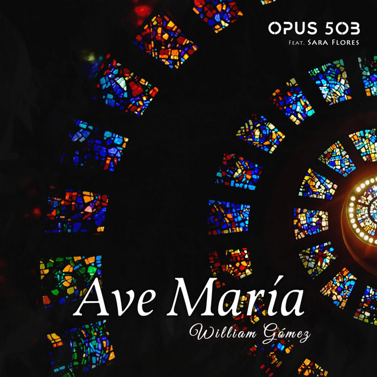
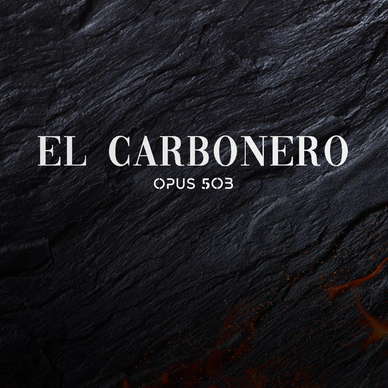
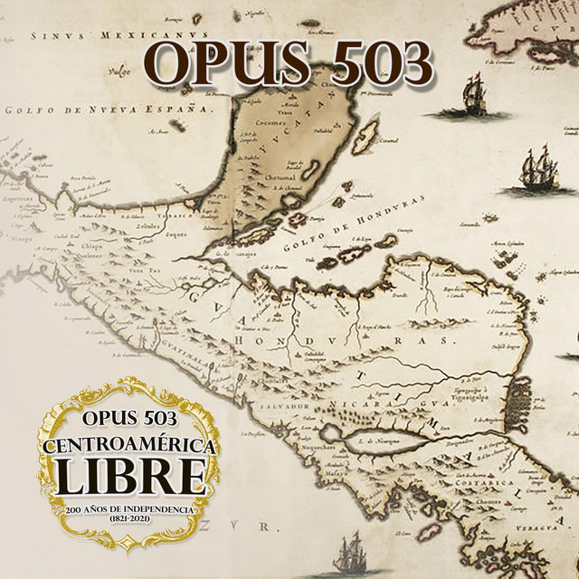

Ave María
Escrita por el guitarrista William Gómez, se trata de una interpretación musical del saludo del Ángel Gabriel a María.
Ver el video
El Carbonero - Bicentenario
Inmortalizada por Pancho Lara, esta vez regresa en el marco de los 200 años de independencia de El Salvador
Ver el video
Centoramérica Libre
Es un recopilatorio de grandes canciones de los 5 países de Centoramérica que lucharon por su independencia
Ver el video
El Balsamero

Con canciones que tienen un trasfondo muy atractivo, se presenta el siguiente recopilatorio inspirado por Mario Ancalmo
Ver el video
El Salvador bajo mi piel

El primer álbum que cuenta solo con canciones de El Salvador, y con la colaboración de más artistas, se presenta El Salvador bajo mi piel, del género pop lírico